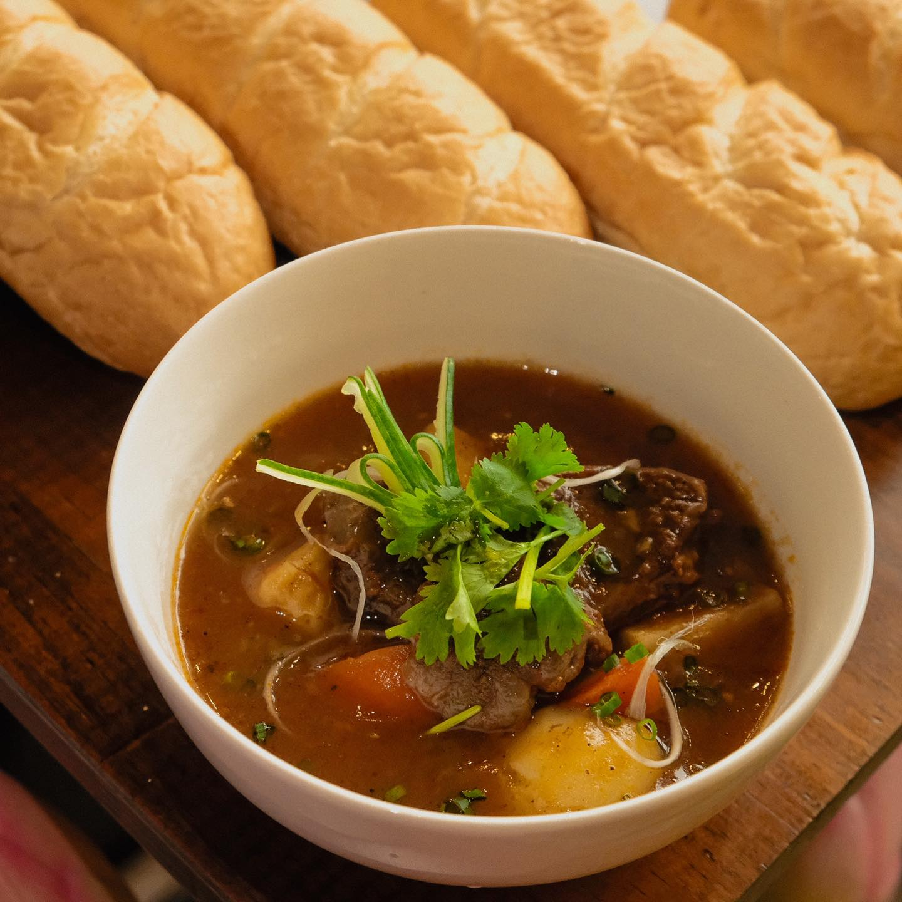

バインミーって何？
そもそもバインミーってどんな料理？
バインミーとは、ベトナムではパンという意味。柔らかめの小さなフランスパンに具を挟んだサンドイッチのこと。
ベトナムでは一般的にパンにレバーペーストを塗って、チャーシューやパテ、ダイコンやニンジン（甘酢漬けのなます）、レタス、
きゅうりなどの野菜、そしてパクチー、ミントなんかを挟んで大きな口を開けて、そのまんまがぶり！と、いきます。
おすすめ料理

焼き豚肉バインミー
★当店の一番人気★
バインミーシンチャオ一番人気！
サクふわのフランスパンに、シャキシャキ食感がおいしい大根とにんじんのなます、
醤油ベースのソースを使ったジューシーな焼き豚をサンド、アジアの香り漂うパクチーが風味と香りを引き上げます♪

ミークアン
★日本初！中部ダナンの名物★
日本初！ミークアンが当店に着陸。
ミークアンとは、ベトナム中部ダンナの名物であり、もちもち感のベトナム風きしめん です。
当店一押しの商品、シンチャオミークアン（豚、エビが入ったミークアン）は如何でしょうか？

ベトナム風ビーフシチュー
大き目にカットされた牛肉とたっぷり野菜がゴロゴロ入っていますので栄養
バランスとてもいいですし、ボリュームたっぷりです。
ベトナム風ビーフシチューはバインミーと一生に食べるのが定番です。

台湾風かき氷5種
優しい甘さとふわふの食感が魅力のミルク氷に、たっぷりのフルーツと合わせて
甘酸っぱいおいしさをお楽しみいただけます。
見た目もかわいい台湾風かき氷は、写真映えも抜群です♪ココナッツ・抹茶・コーヒー・苺・マンゴー味の5種類をご用意。